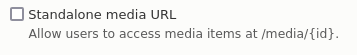

Requirements and installation
Requirements
- An Islandora repository using Drupal 8 or 9, with the Islandora Workbench Integration module enabled. If you are using Drupal 8.5 or earlier, please refer to the "Using Drupal 8.5 or earlier" section below.
- Python 3.7 or higher
- The following Python libraries:
- ruamel.yaml
- Requests
- Requests-Cache
- progress_bar
- openpyxl
- unidecode
- edtf-validate
- rich
- If you want to have these libraries automatically installed, you will need Python's setuptools
Islandora Workbench has been installed and used on Linux, Mac, and Windows.
Warning
Some systems have both Python 2 and Python 3 installed. It's a good idea to check which version is used when you run python. To do this, run python --version, which will output something like "Python 2.7.17" or "Python 3.8.10". If python --version indicates you're running version 2, try running python3 --version to see if you have version 3 installed.
Also, if you installed an alternate version of Python 3.x on your system (for example via Homebrew on a Mac), you may need to run Workbench by calling that Python interpreter directly. For Python 3.x installed via Homebrew, that will be at /opt/homebrew/bin/python3, so to run Workbench you would use /opt/homebrew/bin/python3 workbench while in the islandora_workbench directory.
Installing Islandora Workbench
Installation involves two steps:
- cloning the Islandora Workbench Github repo
- running
setup.pyto install the required Python libraries (listed above)
Step 1: cloning the Islandora Workbench Github repo
In a terminal, run:
git clone https://github.com/mjordan/islandora_workbench.git
This will create a directory named islandora_workbench where you will run the ./workbench command.
Step 2: running setup.py to install the required Python libraries
For most people, the preferred place to install Python libraries is in your user directory. To do this, change into the "islandora_workbench" directory created by cloning the repo, and run the following command:
python3 setup.py install --user
A less common mehtod is to install the required Python libraries into your computer's central Python environment. To do this, omit the --user (note: you must have administrator privileges on the computer to do this):
sudo python3 setup.py install
Updating Islandora Workbench
Since Islandora Workbench is under development, you will want to update it often. To do this, within the islandora_workbench directory, run the following git command:
git pull origin main
After you pull in the latest changes using git, it's a good idea to rerun the setup tools in case new Python libraries have been added since you last ran the setup tools (same command as above):
python3 setup.py install --user
or if you originally installed the required Python libraries centrally, withoug the --user option (again, you will need administrator privileges on the machine):
sudo python3 setup.py install
Keeping the Islandora Workbench Integration Drupal module up to date
Islandora Workbench communicates with Drupal using REST endpoints and Views. The Islandora Workbench Integration module (linked above in the "Requirements" section) ensures that the target Drupal has all required REST endpoints and Views enabled. Therefore, keeping it in sync with Islandora Workbench is important.
Workbench checks the version of the Integration module and tells you if you need to upgrade it. To upgrade the module, update its code via Git or Composer, and follow the instructions in the "Updates" section of its README.
Configuring Drupal's media URLs
Islandora Workbench uses Drupal's default form of media URLs. You should not need to do anything to allow this, since the admin setting in admin/config/media/media-settings (under "Security") that determines what form of media URLs your site uses defaults to the correct setting (unchecked):

If your site needs to have this option checked (so it supports URLs like /media/{id}), you will need to add the following entry to all configuration files for tasks that create or delete media:
standalone_media_url: true
Note
If you change the checkbox in Drupal's media settings admin page, be sure you clear your Drupal cache to make the new media URLs work.
Using Drupal 8.5 or earlier
When ingesting media in Drupal versions 8.5 and earlier, Islandora Workbench has two significant limitations/bugs that you should be aware of:
- Approximately 10% of media creation attempts will likely fail. Workbench will log these failures. Additional information is available in this issue.
- A file with a filename that already exists in Islandora will overwrite the existing file, as reported in this issue.
To avoid these issues, you need to be running Drupal version 8.6 or higher.
Warning
If you are using Drupal 8.5 or earlier, you need to use the version of Workbench tagged with drupal_8.5_and_lower (commit 542325fb6d44c2ac84a4e2965289bb9f9ed9bf68). Later versions no longer support Drupal 8.5 and earlier.
Password managment
Islandora Workbench requires user credentials that have administrator-level permissions in the target Drupal. Therefore you should exercise caution when managing those credentials.
Workbench configuration files must contain a username setting, but you can provide the corresponding password in three ways:
- in the
passwordsetting in your YAML configuration file - in the
ISLANDORA_WORKBENCH_PASSWORDenvironment variable - in response to a prompt when you run Workbench.
If the password setting is present in your configuration files, Workbench will use its value as the user password and will ignore the other two methods of providing a password. If the password setting is absent, Workbench will look for the ISLANDORA_WORKBENCH_PASSWORD environment variable and if it is present, use its value. If both the password setting and the ISLANDORA_WORKBENCH_PASSWORD environment variable are absent, Workbench will prompt the user for a password before proceeding.
Warning
If you put the password in configuration files, you should not leave the files in directories that are widely readable, send them in emails or share them in Slack, commit the configuration files to public Git repositories, etc.